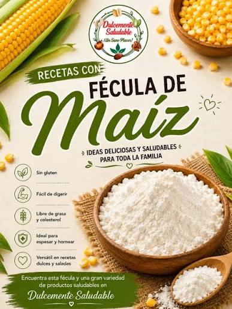

Acerca de Nosotros

Somos los mejores
La Harina plo plo es lo nuestro2 definiciones publicadas
Harina plo plo significa esta es una harina (o comida) que al parecer alimenta mucho por que cada ves que tu vez una persona desnutrida, siempre salta alquien diciendo que lo que le hace falta es comer harina plo plo. Se usa en República Dominicana. Aquí encuentras 2 definiciones votadas por la comunidad, con ejemplos reales.
Te gustó?